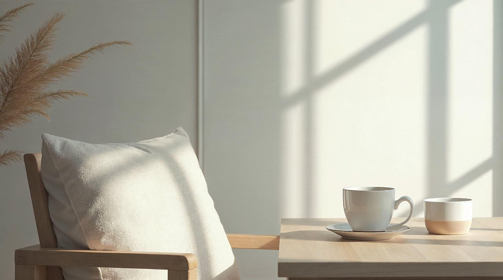

이종호 한의사 감수좋은꿈참사랑한의원 대표원장 (한의사 면허번호 19769)발행 2026-11-26 · 수정 2026-11-26
이 글의 차례
생리 첫날 아침, 진통제를 두 알 삼키고 출근 준비를 합니다. 예전에는 한 알이면 버텼는데 언제부터인가 두 알이 기본이 되었습니다. 그래도 오후가 되면 아랫배 깊은 곳이 꼬이듯 아파 책상 밑에서 몸을 웅크리게 됩니다. 생리통은 원래 다 이런 거라고, 참는 게 맞다고 오래 생각해 왔습니다.
자궁내막증은 자궁 안쪽을 덮는 내막과 비슷한 조직이 자궁 바깥의 골반 안, 예를 들어 난소나 복막, 자궁 뒤쪽 공간에 자리 잡는 상태입니다. 이 조직도 생리 주기에 따라 반응하기 때문에 생리 때마다 염증과 통증이 생기기 쉽습니다. 진단과 치료 방향은 산부인과가 기준입니다.
진료실에서 "생리통이 원래 심한 체질인 줄 알았어요"라는 말을 자주 듣습니다. 해마다 조금씩 심해지는 생리통을 오래 참아 오신 분들입니다. 그 시간이 얼마나 길고 고단했을지 짐작이 됩니다. 이 글에서는 자궁내막증이 무엇인지, 일상에서 무엇을 해 볼 수 있는지, 한의원에서는 무엇을 함께 살피는지 적어 보겠습니다.
왜 자궁내막증이 생길까요
생리혈 일부가 나팔관을 거쳐 골반 안으로 거꾸로 흐르는 일은 많은 여성에게 일어난다고 알려져 있습니다. 그런데 어떤 분은 그 조직이 골반 안에 자리를 잡고 자라게 됩니다. 왜 그런 차이가 생기는지는 면역, 호르몬, 유전 등 여러 가설이 있지만 아직 다 밝혀지지 않았습니다.
가족 중에 자궁내막증이 있었던 분, 초경이 이르거나 생리 주기가 짧고 양이 많은 분에게 더 흔하다는 연구가 있습니다. 그렇다고 무언가를 잘못해서 생긴 병은 아닙니다. "제가 몸을 차게 해서 그런가요?" 하고 자책하시는 분이 많은데, 그 마음부터 내려놓으셨으면 합니다.
자궁내막증은 진단까지 시간이 오래 걸리는 경우가 많습니다. 생리통을 당연하게 여겨 참아 왔거나, 초음파로는 작은 병변이 잘 보이지 않기 때문입니다. 그래서 증상의 흐름을 기록해 산부인과에 설명하는 일이 꽤 중요합니다.
한의학에서는 아랫배 통증이 고정되어 찌르듯 아프고, 덩어리가 섞이며, 생리 전후로 통증이 심해지는 모습을 어혈(瘀血)과 관련지어 살펴 왔습니다. 몸이 차서 흐름이 더딘 경우, 긴장으로 기운이 막힌 경우도 함께 봅니다. 다만 이것은 산부인과 진단을 대신하는 틀이 아니라, 몸 전체를 함께 이해하는 방법입니다.
보통 생리통과 자궁내막증, 이렇게 나눠 봅니다
생리통이 있다고 다 자궁내막증은 아닙니다. 정확한 구분은 산부인과 진료와 검사를 따르시고, 여기서는 이해를 돕는 정도로만 나눠 보겠습니다.
흔한 생리통은 이런 모습이 많습니다
생리 시작 직전이나 첫날, 둘째 날에 아랫배가 뒤틀리듯 아프다가 차츰 줄어듭니다. 따뜻하게 하고 진통제를 먹으면 일상을 이어 갈 수 있는 정도가 많고, 해가 지나도 통증의 크기가 비슷하게 유지되는 편입니다.
자궁내막증에서 자주 듣는 이야기
해마다 생리통이 조금씩 심해집니다. 진통제를 먹어도 버티기 힘들고, 생리 며칠 전부터 통증이 시작되어 생리가 끝난 뒤에도 남기도 합니다. 생리 때 대변을 보면 항문 쪽이 찌르듯 아프거나, 성관계 때 깊은 곳이 아프다는 분도 계십니다.
생리와 상관없이 골반이 늘 묵직하거나 허리 아래쪽이 뻐근한 날이 이어지기도 합니다. 임신이 잘 되지 않아 검사를 받다가 처음 알게 되는 경우도 있습니다. 반대로 병변이 있어도 통증이 거의 없는 분도 있어서, 통증의 크기만으로 판단하기는 어렵습니다.
자궁선근증과는 어떻게 다를까요
선근증은 내막 조직이 자궁 근육층 안으로 파고든 상태이고, 자궁내막증은 자궁 바깥의 골반 안에 자리 잡은 상태입니다. 둘이 함께 있는 분도 드물지 않아서 스스로 짐작하기보다 산부인과에서 확인하는 것이 먼저입니다.
검사와 진단은 이렇게 이어집니다
산부인과에서는 증상 이야기와 내진, 초음파로 먼저 살펴봅니다. 난소에 생긴 자궁내막종은 초음파로 비교적 잘 보이지만, 복막에 흩어진 작은 병변은 초음파로 보이지 않는 경우가 많습니다. 필요하면 MRI나 혈액 검사를 더하기도 하고, 확진은 복강경 수술로 하는 경우도 있습니다.
그래서 "초음파에서 깨끗하다는데 왜 이렇게 아플까요?" 하는 답답함을 안고 오시는 분이 있습니다. 검사에서 보이지 않는다고 통증이 가짜인 것은 아닙니다. 증상 기록을 들고 산부인과에 다시 상의하시고, 그사이 몸 상태는 한의원에서 함께 살피면 됩니다.
한의원에서는 몸의 결을 이렇게 나눠 봅니다
아랫배가 차고 따뜻하게 하면 편해지는 분, 생리 전 가슴이 답답하고 예민해지며 통증이 커지는 분, 늘 피곤하고 생리 뒤에 기운이 쭉 빠지는 분은 같은 진단이라도 살피는 방향이 조금씩 다릅니다. 맥과 혀, 아랫배를 진찰하고 생활 이야기를 들으며 지금 어느 쪽에 가까운지를 함께 정리합니다.
통증이 하루를 바꿀 때
자궁내막증의 어려움은 통증 자체에만 있지 않습니다. 한 달에 며칠씩 일정을 비워야 하고, 중요한 약속이 생리 예정일과 겹칠까 봐 미리 걱정하게 됩니다. 이 긴장이 쌓이면 생리 전부터 잠이 얕아지고, 소화가 흔들리고, 통증을 더 크게 느끼는 고리가 생기기도 합니다.
통증이 오래 이어지면 몸은 작은 자극에도 예민하게 반응하는 쪽으로 바뀌기도 합니다. 그래서 저는 통증의 크기와 함께 잠과 긴장, 피로를 꼭 같이 여쭙습니다. 이 부분을 돌보는 일이 생리 기간을 조금 덜 힘들게 보내는 데 의미가 있다고 생각합니다.
스스로 점검해 보세요
아래 가운데 해당하는 줄이 있다면 표시해 두셨다가 산부인과와 한의원 진료 때 함께 보여 주세요. 점수를 매기려는 목록은 아닙니다.
- 생리통이 해마다 조금씩 심해지고 있다
- 진통제를 먹어도 생리 때 일상을 멈추는 날이 있다
- 생리 며칠 전부터 통증이 시작되거나, 끝난 뒤에도 남는다
- 생리 때 대변을 보면 항문 쪽이 찌르듯 아프다
- 성관계 때 골반 깊은 곳이 아프다
- 생리와 상관없이 아랫배나 허리 아래쪽이 묵직한 날이 많다
- 임신을 준비했는데 생각보다 오래 소식이 없다
먼저 이렇게 여쭙니다
결과지와 기록을 펼쳐 놓고 저는 대략 이런 순서로 여쭙습니다. 처음부터 다 기억하지 못하셔도 괜찮습니다.
- 산부인과에서 어떤 검사로 진단을 받으셨나요? 난소 혹이 있다면 크기는 어떻다고 들으셨나요?
- 호르몬 치료나 수술을 받으셨거나 권유받으셨나요? 지금 드시는 약은 무엇인가요?
- 생리통은 언제 시작해 언제 가장 심한가요? 진통제는 몇 알쯤 드시나요?
- 배변통, 성관계 때 통증, 허리나 다리로 뻗치는 통증이 있나요?
- 생리 양과 기간, 덩어리, 생리 사이 출혈은 어떤가요?
- 잠과 소화, 대변, 손발과 아랫배의 온도는 어떤가요?
- 임신을 준비하고 계신가요?
임신 계획은 꼭 여쭙는 이유가 있습니다. 자궁내막증은 임신 준비 방향과 연결되는 경우가 있어서 이 경우는 산부인과나 난임 진료와의 상의가 더 중요해집니다. 침이나 한약을 정할 때도 임신 가능성이 있는지부터 확인합니다.
일상에서 먼저 해 볼 수 있는 것
생활을 바꾼다고 자궁내막증이 사라진다고 말씀드릴 수는 없습니다. 다만 생리 기간을 조금 덜 힘들게 보내고, 통증을 키우는 고리를 느슨하게 만드는 일은 해 볼 수 있습니다. 아래에서 하나만 골라 보세요.
- 생리 예정일 사흘 전부터 잠드는 시각을 30분 앞당기고, 늦은 야식과 과음을 줄이기
- 생리 기간에는 아랫배와 허리를 따뜻하게 하되, 핫팩은 옷 위에 짧게 쓰기
- 통증이 덜한 날에는 가벼운 걷기와 골반 주변 스트레칭을 10분쯤 해 보기
- 생리 예정일 무렵의 중요한 일정을 미리 가볍게 조정해 두기
- 진통제는 처방받은 방법대로, 통증이 크게 올라오기 전에 드시는 요령을 산부인과에 여쭤 보기
배를 따뜻하게 하는 것만으로도 편안해지는 분이 많습니다. 다만 뜨거운 찜질을 오래 맨살에 대면 화상이 생길 수 있으니 짧게, 여러 번 나누어 쓰시길 권합니다.
마음도 빼놓을 수 없습니다. 통증이 올까 봐 미리 긴장하는 것만으로도 몸이 굳습니다. 생리 전 며칠은 스스로에게 조금 너그러운 일정을 허락해 주세요.

일하거나 공부하는 분이라면
생리통으로 자리를 비우는 일을 말하기 어려워 꾹 참고 앉아 계시는 분이 많습니다. 가능하다면 가까운 동료나 선생님 한 사람에게만이라도 사정을 알려 두세요. 미리 말해 두면 통증이 심한 날 잠깐 쉬어 가는 일이 훨씬 수월해집니다.
책상에는 작은 무릎담요와 따뜻한 물을 담을 보온병을 두고, 한 시간에 한 번쯤 일어나 골반을 천천히 돌려 보세요. 오래 같은 자세로 앉아 있으면 골반과 허리가 더 묵직해지기 쉽습니다.
시험이나 발표처럼 미룰 수 없는 일정이 생리 예정일과 겹친다면, 진통제를 어떻게 준비할지 산부인과에 미리 여쭤 두시는 것도 방법입니다. 한의원 진료도 그 일정에 맞춰 함께 상의할 수 있습니다.
한의원에서 함께 살필 수 있는 경우
- 산부인과에서 진단을 받고 치료를 이어 가면서 생리통과 피로를 함께 상의하고 싶은 경우
- 생리 때 아랫배가 차고 찌르듯 아프며 덩어리가 섞이고, 손발도 찬 편인 경우
- 통증 때문에 잠이 깨지고 소화가 흔들려 생리 기간마다 일상이 무너지는 경우
- 생리와 상관없이 골반과 허리가 묵직해 오래 앉아 있기 힘든 경우
좋은꿈참사랑한의원에 처음 오시면 산부인과에서 들은 진단과 지금 받는 치료부터 확인하고, 아래 '먼저 확인이 필요한' 신호가 없는지 살핍니다. 그다음 맥을 짚으며 통증과 생리, 잠, 소화, 몸의 온도를 여쭙고, 필요하다고 판단되면 혀와 아랫배, 허리도 살펴봅니다.
이렇게 모은 이야기를 바탕으로 침, 한약 상담, 생활 관리 가운데 지금 몸에 맞는 방법을 함께 정합니다. 호르몬 치료를 받고 계시거나 수술 일정이 잡혀 있다면 그 일정을 먼저 존중하고, 한약을 상의할 때는 드시는 약을 모두 확인하며 신중하게 정합니다.
한의원 진료가 산부인과 추적 검사를 대신하지는 않습니다. 정해진 검사 날짜는 그대로 지키시고, 그 사이의 하루를 함께 채워 간다고 생각해 주세요. 다시 오시면 지난 생리의 통증과 진통제 개수부터 이어서 여쭙습니다.
이렇게 기록해 오시면 상담이 쉬워집니다
통증은 지나고 나면 기억이 흐려집니다. 두세 달만 아래처럼 적어 보세요.
- 생리 시작일과 끝난 날, 양이 가장 많았던 날
- 통증이 시작된 날과 가장 심했던 날, 0에서 10까지의 대략 점수
- 하루에 먹은 진통제 개수와 시각
- 배변통, 성관계 때 통증, 허리나 다리로 뻗치는 통증이 있었던 날
- 통증 때문에 일이나 수업을 쉬었던 날
- 잠이 깬 날, 소화가 불편했던 날
- 산부인과 검사 날짜와 들은 설명
휴대폰 생리 달력 앱의 메모 칸을 쓰셔도 충분합니다. 이 기록은 산부인과 진료 때도 그대로 도움이 됩니다.
기록을 몇 달 모아 보면, 잠을 많이 설친 달이나 일이 몰린 달에 통증이 더 컸는지 같은 흐름이 보이기도 합니다. 그 흐름을 찾으면 다음 달에 무엇을 미리 조절할지 함께 정하기가 훨씬 쉬워집니다.
치료를 이어 가며 지내기
호르몬제나 진통제를 처방받아 드시고 있다면 처방한 의사와 상의 없이 줄이거나 끊지 않습니다. 한의원 진료를 함께 받으실 때도 그 약은 그대로 두고, 드시는 약을 모두 알려 주세요.
자궁내막증은 오래 함께 가는 경우가 많아서, 한 번에 해결하려 하기보다 생리 기간을 조금씩 덜 힘들게 만드는 쪽으로 목표를 잡는 편이 마음도 덜 지칩니다. 생리통은 참는 것이 미덕이 아닙니다. 아프다고 말해 주시면 같이 들여다보겠습니다.
이런 증상은 먼저 확인이 필요합니다
- 아랫배가 갑자기 찢어지듯 아프면서 식은땀이 나거나 어지러워 서 있기 어려운 경우
- 아랫배 통증과 함께 열이 오르고 통증이 점점 심해지는 경우
이런 신호가 있으면 한의원보다 가까운 병원이나 응급실을 먼저 찾으세요.
함께 읽으면 좋은 글
- 생리통이 심할 때 한의원에서는 무엇을 먼저 묻고, 언제 병원 검사가 필요한가요?
- 자궁근종이나 자궁선근증이 있다고 들었을 때 한의원에서는 무엇을 함께 살피나요?
- 생리 때마다 아랫배가 차고 묵직할 때는 무엇을 먼저 살피나요?
- 아이를 갖고 싶어 진료를 받을 때 한의원에 무엇을 알려야 하나요?
여쭙는 것
- 산부인과에서 어떤 검사로 진단을 받으셨나요? 난소 혹이 있다면 크기는 어떻다고 들으…
- 호르몬 치료나 수술을 받으셨거나 권유받으셨나요? 지금 드시는 약은 무엇인가요?
- 생리통은 언제 시작해 언제 가장 심한가요? 진통제는 몇 알쯤 드시나요?
생활에서 해 볼 것
- 생리 예정일 사흘 전부터 잠드는 시각을 30분 앞당기고, 늦은 야식과 과음을 줄이기
- 생리 기간에는 아랫배와 허리를 따뜻하게 하되, 핫팩은 옷 위에 짧게 쓰기
- 통증이 덜한 날에는 가벼운 걷기와 골반 주변 스트레칭을 10분쯤 해 보기
한의원에서 함께 살필 것
- 산부인과에서 진단을 받고 치료를 이어 가면서 생리통과 피로를 함께 상의하고 싶은 경우
- 생리 때 아랫배가 차고 찌르듯 아프며 덩어리가 섞이고, 손발도 찬 편인 경우
- 통증 때문에 잠이 깨지고 소화가 흔들려 생리 기간마다 일상이 무너지는 경우
먼저 확인이 필요한 신호
- 아랫배가 갑자기 찢어지듯 아프면서 식은땀이 나거나 어지러워 서 있기 어려운 경우
- 아랫배 통증과 함께 열이 오르고 통증이 점점 심해지는 경우
한눈에 보는 표
| 구분 | 핵심 |
|---|---|
| 여쭙는 것 | 산부인과에서 어떤 검사로 진단을 받으셨나요? 난소 혹이 있다면 크기는 어떻다고 들으셨나요? 호르몬 치료나 수술을 받으셨거나 권유받으셨나요? 지금 드시는 약은 무엇인가요? |
| 생활에서 해 볼 것 | 생리 예정일 사흘 전부터 잠드는 시각을 30분 앞당기고, 늦은 야식과 과음을 줄이기 생리 기간에는 아랫배와 허리를 따뜻하게 하되, 핫팩은 옷 위에 짧게 쓰기 |
| 한의원에서 함께 살필 것 | 산부인과에서 진단을 받고 치료를 이어 가면서 생리통과 피로를 함께 상의하고 싶은 경우 생리 때 아랫배가 차고 찌르듯 아프며 덩어리가 섞이고, 손발도 찬 편인 경우 |
| 먼저 확인이 필요한 신호 | 아랫배가 갑자기 찢어지듯 아프면서 식은땀이 나거나 어지러워 서 있기 어려운 경우 아랫배 통증과 함께 열이 오르고 통증이 점점 심해지는 경우 |
자주 묻는 질문
한의원에 다니면 자궁내막증이 없어지나요?
병변의 크기나 변화를 약속드릴 수는 없습니다. 진단과 추적은 산부인과에서 이어 가시고, 한의원에서는 생리통, 골반 통증, 피로, 잠, 소화처럼 그사이의 몸 상태를 함께 살피며 침과 한약 상담, 생활 관리를 상의합니다.
호르몬 치료 중인데 한의원 진료를 같이 받아도 되나요?
함께 받으실 수 있습니다. 드시는 호르몬제와 다른 약을 모두 알려 주시면 확인한 뒤 침과 한약을 신중하게 정합니다. 처방받은 약은 처방한 의사와 상의 없이 끊지 않습니다.
생리통이 심하면 다 자궁내막증인가요?
그렇지는 않습니다. 생리통의 원인은 여러 가지이고, 해마다 심해지거나 진통제로 버티기 어렵다면 산부인과에서 확인해 보시길 권합니다.
생리 중에도 침을 맞을 수 있나요?
생리 중에도 진료를 받으실 수 있습니다. 오시면 생리 중이라고 말씀해 주시고, 그날의 통증과 출혈량, 컨디션에 맞춰 자세와 시간을 정합니다.
임신 준비 중인데 무엇을 먼저 해야 하나요?
자궁내막증이 있다면 임신 준비 방향을 산부인과나 난임 진료에서 먼저 상의하시길 권합니다. 한의원에서는 그 일정을 존중하며 잠과 식사, 몸의 온도 같은 바탕을 함께 살핍니다.
좋은꿈참사랑한의원은 재진 때 지난번 이야기부터 이어서 여쭙니다. 진료시간과 예약은 오시는 길에서 확인하세요.
어디서 상담받을 수 있나요?
좋은꿈참사랑한의원은 서울 동작구 만양로2길 2 신성빌딩 3층·5층(서울 동작구 상도동, 7호선 상도역 3번 출구 근처)에 있습니다. 한의사 3명(이종호 대표원장, 조영기 수석진료원장, 정원영 진료원장)이 진료합니다. 진료시간은 평일 09:30~20:00(점심 13:00~14:00), 토·일·공휴일 09:30~15:00이며, 방문 전 전화로 확인을 권합니다. 예약은 네이버 예약, 카카오톡 상담, 전화 02-815-7510로 받습니다.
이 글은 일반적인 건강 정보이며 개인의 진단이나 치료를 대신하지 않습니다. 증상이 있거나 복용 중인 약이 있다면 진료를 통해 확인하세요. 치료 효과는 개인마다 다를 수 있습니다.
작성 기준: 일반적으로 알려져 있는 건강 정보를 참고해 정리했습니다(대표원장 감수). 증상 기록은 1~2주 동안 하루 1회, 비슷한 시간에 적어 오시면 지난 상태와 비교하기 쉽습니다.